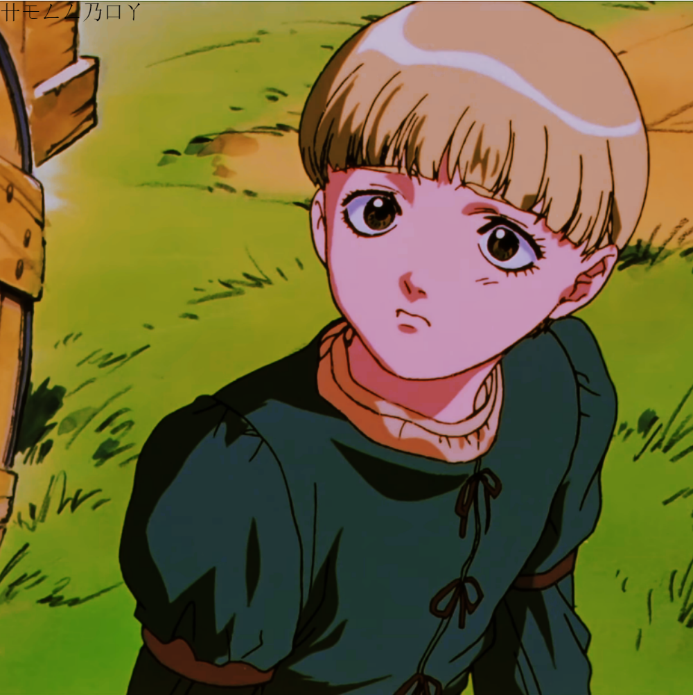
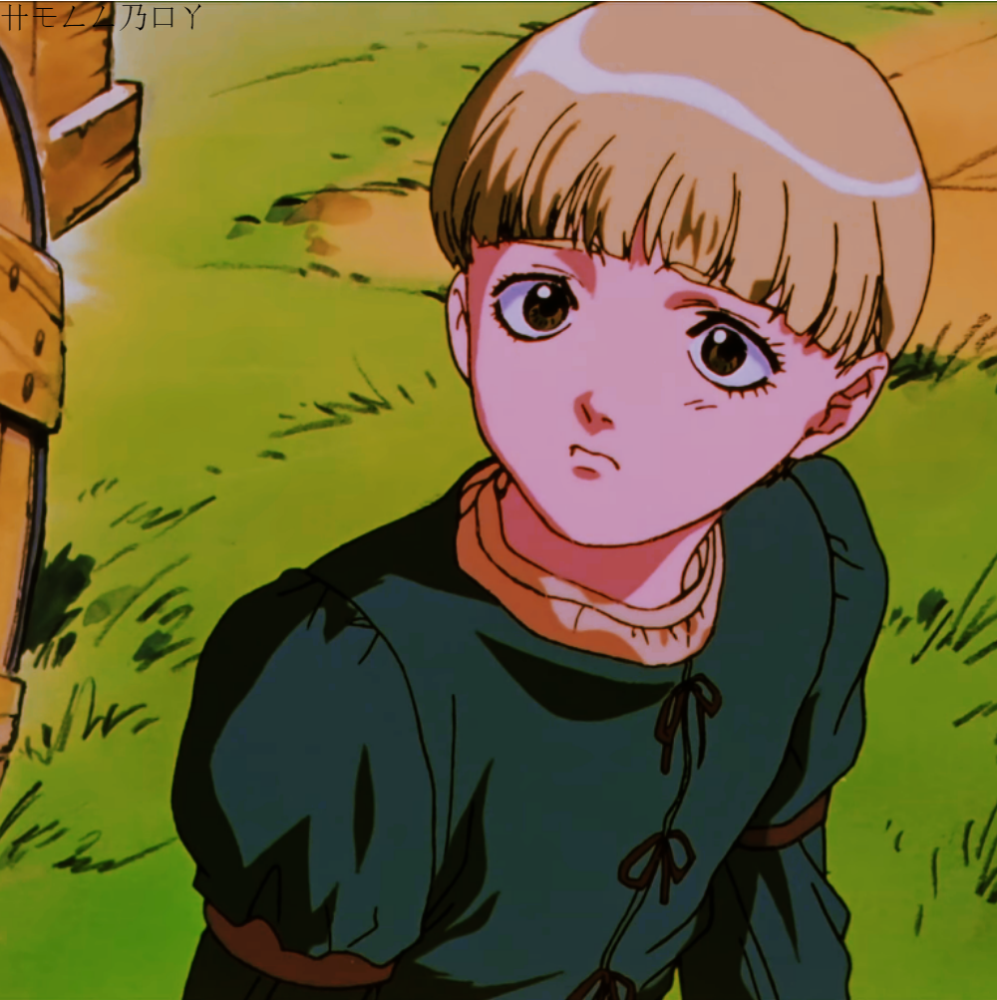

Berserk, tiene también una adaptación animada. Fue emitida entre octubre de 1997 y marzo de 1998. Desarrollada por el estudio Oriental Light and Magic, consta de 25 episodios; donde el primero abarca la primera saga del manga omitiendo a personajes que aparecían en ella como Puck e incluyendo a personajes que no aparecían como Collette, mientras que el resto de episodios abarcan gran parte de La Edad de Oro.
Personajes principales de esta animación


 

Una pequeña sinopsis de la trama...
Un joven y bravo guerrero llamado Guts lucha como un mercenario en primera línea. Por azares del destino, Guts se acaba uniendo al carismático y mortal joven llamado Griffith. Liderando al grupo de mercenarios conocidos como la Banda del Halcón, Griffith empuña su formidable fuerza como ningún otro lo ha hecho.
Conducidos por cuestiones de estatus, los miembros de la Banda del Halcón pronto irán escalando en el camino de la gloria tras su alianza con el reino de Midland, hasta que un desafortunado suceso provocará un revés en la Banda que pondrá al mundo de rodillas.